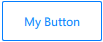
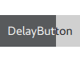
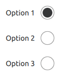
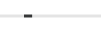

UI Controls
You can create instances of preset UI controls to inform users about the progress of the application or to gather input from users. They are available in Components > Qt Quick Controls > Controls.
The following types of controls are available for user interaction:
You can specify values for the properties of component instances in the Properties view. Some properties are common to all components, whereas some are common to particular types of controls. Some properties are only available for a particular control. The following sections describe the preset UI controls and their properties.
General Control Properties
You can set control properties in the Properties view.
The Enable check box indicates whether the control is enabled.
The value of the Focus policy field determines whether the control accepts focus by tabbing, clicking, and using the mouse wheel.
Select the Hover and Wheel check boxes to enable the control to accept mouse events. The hover value is propagated to all child components, unless it has been explicitly set for them.
Note: Take care when enabling wheel events for controls within scrollable components, such as Flickable because the control will consume the events, and therefore interrupt scrolling of the flickable.
Spacing is useful for controls that have multiple or repetitive building blocks. For example, some styles use spacing to determine the distance between the text and indicator of a Check Box. Spacing is not enforced by the controls, so each style may interpret it differently, and some may ignore it altogether.
Button Controls
Qt Quick Controls offer a selection of button-like controls for specific use cases. The following sections contain guidelines for choosing the button most suitable for a use case and discuss the values you can set for button properties in the Properties view.
Recommendations for buttons that contain text:
- Keep labels short and concise.
- Use the default font unless you have UI guidelines specifying otherwise.
- If the text is localized, consider how a longer text affects the layout.
For more information about setting text properties, see Character Properties and Padding.
The properties that are shared by all button controls are described in:
Button
You can create an instance of Components > Qt Quick Controls > Controls > Button:
Alternatively, you can use a wizard to create a custom button:

A button can be pushed or clicked by users. Typically, buttons are used to perform an action or to answer a question. For example, OK, Apply, Cancel, Close, Yes, No, and Help.
The button text should be a verb describing the action, or a noun matching the title of the popup that will be opened.
Don't use a button to set state because a Switch is more suitable for that purpose.
Highlighted Buttons
Select the Highlight check box in the Button section to draw the users' attention towards a button. Highlighting a button has no effect on keyboard interaction.
The following image shows an example of a highlighted button:

Flat Buttons
A flat button typically does not draw a background unless it is pressed or checked. To create a flat button, select the Flat check box in the Button section.
The following image shows an example of a flat button:

Icon Buttons
To create a button that contains an icon, use the wizard template to create a custom button and drag-and-drop the icon to the button background component. For an example of using the wizard template, see Creating a Push Button.
Delay Button

The Delay Button control incorporates a delay before triggering an action. This delay prevents accidental presses.
Use delay buttons in touch UIs and for actions that must be triggered with care.
You can set the delay in milliseconds in the Delay field.
Check Box
You can create instances of Components > Qt Quick Controls > Controls > Check Box:
Alternatively, you can use a wizard to create custom check boxes:

A check box presents an option button that can be toggled on (checked) or off (unchecked). Check boxes are typically used to select one or more options from a set of options. For larger sets of options, such as those in a list, consider creating an instance of the Check Delegate control instead.

A delegate can be highlighted in order to draw the user's attention towards it. Highlighting has no effect on keyboard interaction. Select the Highlight check box in the Item Delegate section to highlight the delegate.
Use check boxes to build multi-selection option lists where any number of options can be selected, including none, but the options are not mutually exclusive.
Use a single check box for a yes/no choice, such as when users have to accept the terms of service agreement in a dialog. For a single yes/no choice, you can also use a Switch. If users are choosing between options, use a check box. If they are choosing between actions to be taken, a switch is recommended.
The value of the Checked check box in the Button Content section determines the state of the check box. However, in addition to the checked and unchecked states, a check box has a third state: partially checked.
Select the Tri-state check box in the Check Box section to enable the check box to cycle between checked, partially checked, and unchecked states when users toggle it by using touch, mouse, or keyboard.

When options can be grouped, you can use a partially checked check box to represent the whole group. Select PartiallyChecked in the Check state field to indicate that users selected some sub-components in the group but not all of them.
The checkable options are often listed vertically.
The check box label should be a statement that the check mark makes true and that the absence of a check mark makes false. Therefore, the check box label should not contain a negative statement.
Radio Button
Radio Button is an option button that can be toggled on (checked) or off (unchecked). Radio buttons are typically used to select one option from a set of options. Selecting an option automatically clears the previous selection.
If there are only two mutually exclusive options, combine them into a single Check Box or a Switch.
Radio Delegate is similar to radio button, except that it is typically used in views.

Select the Highlight check box in the Radio Delegate section to highlight the delegate.
Recommendations for radio buttons:
- Limit the label text to one line.
- Ensure that a sensible default option is checked.
- List radio button options vertically.
- Keep the list short.
- In order to avoid confusion, do not put two groups of radio buttons next to each other.
Switch
You can create an instance of Components > Qt Quick Controls > Controls > Switch:

Alternatively, you can use a wizard to create a custom switch:

A switch is an option button that can be dragged or toggled on (checked) or off (unchecked). Switches are typically used to select between two states: on or off. For larger sets of options, such as those in a list, consider using Switch Delegate instead.

Select the Highlight check box in the Item Delegate section to highlight the delegate.
Use a switch for binary operations that take effect immediately after the switch is toggled. For example, use a switch to turn WiFi on or off.
Round Button
Round Button is a clickable control that starts an action, or opens or closes a popup. A round button with a square image icon or one-letter font icon is circular. A circular round button takes less space than a normal button, and can also be used as a floating action button.
In addition to common Button properties, a round button has the Radius property, which holds the radius of the button.
To create a relatively square button that has slightly rounded corners, use a small value, such as 3.
To create a completely circular button, use a value that is equal to half of the width or height of the button, and make the button's width and height identical.
Displaying Text and Icons
A button can contain text, an icon, or both. Specify the button text in the Text field in the Button Content section. The value of the Display field determines whether only text or an icon is displayed, or when both are visible, whether the text is placed beside the icon or under it.
Checking Buttons
A checkable button toggles between checked (on) and unchecked (off) when users click on it or press the space bar while the button has active focus. Select the Checkable check box to make a button checkable. To make the button checked, select the Checked check box.
Buttons that belong to the same parent component can be mutually exclusive. Users can click a button to check it, and the previous selection is cleared. Users cannot uncheck the currently checked button by clicking it. Instead, they must click another button in the group to set the new checked button for that group.
Radio buttons and tab buttons are mutually exclusive by default. To make other types of buttons mutually exclusive, select the Exclusive check box.
If the buttons don't belong to the same parent, checking and unchecking buttons does not affect the other buttons in the group.
Button Signals
A button emits the clicked() signal when it is activated by users. Connect to this signal to perform the button's action. Buttons provide the following additional signals: canceled(), doubleClicked(), pressed(), released(), and pressAndHold() for long presses.
Select the Auto-repeat check box to repeat the pressed(), released(), and clicked() signals while the button is pressed and held down. The pressAndHold() signal will not be emitted.
Indicators
Qt Quick Controls offer a selection of indicator-like controls, such as busy indicator, page indicator, and progress bar, for specific use cases. The following sections contain guidelines for choosing the indicator most suitable for a use case.
Busy Indicator
Busy Indicator indicates that an operation is in progress, and that the UI has to wait for the operation to complete.
A busy indicator is similar to an indeterminate Progress Bar. Both can be used to indicate background activity. The main difference is visual and that a progress bar can also present a concrete amount of progress (when it can be determined). Due to the visual difference, busy indicators and indeterminate progress bars fit in different places in UIs.
Select the Running check box to make the busy indicator visible.
Select the Live check box to provide live updates of the progress.
Typical places for a busy indicator are:
- In the corner of a Tool Bar
- As an overlay on top of a Page
- On the side of an Item Delegate
Page Indicator
Page Indicator is used to indicate the currently active page in a container of multiple pages. Specify the number of pages in the Count field. Select the current page in the Current field.
Select the Interactive check box to determine that the page indicator reacts to presses and automatically changes the value of the Current field accordingly.
Page indicators are typically quite small in order to avoid distracting the user from the actual content of the UI. Therefore, they can be hard to click, and might not be easily recognized as interactive by users. For these reasons, they are best used to complement primary methods of navigation, such as a Swipe View, not replace them.
Progress Bar

Progress Bar indicates the progress of an operation. You can specify the initial value in the Value field, but it should be updated regularly. Specify the range in the From and To fields, which can both contain any value.
Select the Indeterminate check box when unable to determine the size of the item being downloaded, or if the download progress might get interrupted due to a network failure.

The indeterminate mode is similar to a Busy Indicator in that both can be used to indicate background activity. Due to their visual differences, indeterminate progress bars and busy indicators fit in different places in UIs.
Typical places for an indeterminate progress bar are:
- At the bottom of a Tool Bar
- Inline within the content of a Page
- In an Item Delegate to show the progress of a particular item
Selectors
Qt Quick Controls offer a set of selector-like controls, such as sliders, dial, spin box, combo box, and tumbler, for specific use cases. The following sections contain guidelines for choosing the selector most suitable for a use case.
Slider and Dial
You can create an instance of Components > Qt Quick Controls > Controls > Slider:

Alternatively, you can use a wizard to create a custom slider:

A slider is used to select a value by sliding a handle along a track, whereas Range Slider is used to select a range specified by two values, by sliding each handle along a track.
Dial is similar to a traditional dial knob that is found on devices such as stereos or industrial equipment. It allows users to specify a value within a range.
You can create an instance of Components > Qt Quick Controls > Controls > Dial:

Alternatively, you can use a wizard to create a custom dial:
In the From and To fields, set the range of the slider or dial. Set the value of the slide handle or dial in the Value field. For a range slider, set the initial positions of the first and second handles in the Value 1 and Value 2 fields. Select the Live check box to provide live updates of the value properties.
In the Snap mode field, set how the slider handles or dial behave with regards to the value of the Step size field. By default, they do not snap to step size, but you can set them to snap to it either while being dragged or after being released.
You can set slider orientation to horizontal or vertical in the Orientation field.
Modify the Drag threshold to determine the threshold at which a touch drag event will be initiated.
For more information, watch the following video:
A dial supports circular, horizontal, and vertical input modes. For applications where fast input is important, the circular input mode is useful, as clicking the dial will move it directly to that position. For applications where precise input is important, the horizontal and vertical input modes are recommended, as these allow small adjustments to be made relative to where the dial is clicked. These modes are also better for dials where large jumps in values could be unsafe, such as a dial that controls audio volume. Set the input mode in the Input mode field.
Spin Box
You can create an instance of Components > Qt Quick Controls > Controls > Spin Box:

Alternatively, you can use a wizard to create a custom spin box:

A spin box enables users to choose an integer value by clicking the up or down indicator buttons, or by pressing up or down on the keyboard. Select the Editable check box to enable users to enter a text value in the input field.
The other spin box properties are similar to those of a Dial.
Combo Box

Combo Box is a combined button and popup list. It provides a means of presenting a list of options to users in a way that takes up the minimum amount of screen space.
A combo box is used to select a value from a static multiple-line drop-down list. Users cannot add new values, and only one option can be selected.
Combo box values are provided by a data model. The data model is usually a JavaScript array, a ListModel, or an integer, but other types of data models are also supported.
Select the Editable check box to auto-complete combo box text based on what is available in the model.
When using models that have multiple named roles, specify the role of the Display text property in the Text role field. To use a role of the model item that corresponds to the text role, enter valueRole in the field.
The Current index field contains the index of the item that is displayed in the combo box. The default value is -1 when the combo box is empty and 0 otherwise.
A flat combo box does not draw a background unless it is interacted with, which makes it blend into the UI. Use flat combo boxes on a toolbar, for example, to match the flat look of tool buttons. To create a flat combo box, select the Flat check box.
Recommendations for combo boxes:
- If the number of values is very large, consider applying a filter.
- If the number of values is small, consider using Radio Button, so that users can see all options at the same time.
- Set a default value, which should be the value that you expect to be chosen most often.
Tumbler
Tumbler allows users to select an option from a spinnable wheel of items. It is useful when there are too many options to use, for example, a Radio Button, and too few options to require the use of an editable Spin Box. It is convenient in that it requires no keyboard usage and wraps around at each end when there are a large number of items.
Specify the number of visible options in the Visible count field. Select the index of the current option in the Current index field.
To enable wrapping, select the Wrap check box.
Tab Bar
Tab Bar provides a tab-based navigation model, where users can switch between different views or subtasks. A tab bar is commonly used as a header or footer of an ApplicationWindow. Select the toolbar position in the Position field.
Typically, a tab bar contains a static set of Tab Button controls that are defined as its children. The Current index field in the Container section shows the index of the current tab button. The default value is -1 when the tab bar is empty and 0 otherwise.
You can specify content width (W) and height (H) in the Content size field.
If the total width of the buttons exceeds the available width of the tab bar, it automatically becomes flickable.
Tool Bar

Tool Bar contains application-wide and context-sensitive actions and controls, such as navigation buttons and search fields. A toolbar is commonly used as a header or footer of an ApplicationWindow. Select the toolbar position in the Position field.
Tool Button is nearly identical to Button, but it has a graphical appearance that makes it more suitable for insertion into a toolbar.
A toolbar does not provide a layout of its own, but requires you to position its contents, for instance by creating a RowLayout. If the toolbar contains only one item, it will resize to fit the implicit item size. This makes a toolbar particularly suitable for use together with layouts. However, you can specify content width (W) and height (H) in the Content size field in the Pane section.
Tool Separator is used to visually distinguish between groups of items on a toolbar by separating them with a line. It can be used in horizontal or vertical toolbars by setting the value of the Orientation field.
Styling Controls
The preset UI controls can be styled. The 2D view reads the preferred style from a configuration file (qtquickcontrols2.conf). To change the style, select another style from the list on the main toolbar. This enables you to check how your UI looks when using the available styles.
For an example of defining your own style and using it in the Design mode, see Qt Quick Controls 2 - Flat Style.
For more information about how to customize a particular control, see Customization Reference.
Summary of UI Controls
The following table lists preset UI controls with links to their developer documentation. They are available in Components > Qt Quick Controls. The MCU column indicates which controls are supported on MCUs.
| Icon | Name | MCU | Purpose |
|---|---|---|---|
| Busy Indicator | Indicates activity while content is being loaded. | ||
| Button |  | A push button that you can associate with an action. | |
| Check Box | | An option button that can be toggled on (checked) or off (unchecked). | |
| Check Delegate | An item delegate that can be toggled on (checked) or off (unchecked). | ||
| Combo Box | A combined button and popup list that is populated by using a data model. | ||
| Delay Button | An option button that is triggered when held down long enough. | ||
| Dial | | A circular dial that is rotated to set a value. | |
| Page Indicator | Indicates the indicate the currently active page in a container of multiple pages. | ||
| Progress Bar | | Indicates the progress of an operation. | |
| Radio Button | | An option button that can be switched on (checked) or off (unchecked). | |
| Radio Delegate | An item delegate that can be toggled on (checked) or off (unchecked). | ||
| Range Slider | Enables users to select a range of values by sliding two handles along a track. | ||
| Round Button | A push button with rounded corners that you can associate with an action. | ||
| Slider | | Enables users to select a value by sliding a handle along a track. | |
| Spin Box | Enables users to specify a value by clicking the up or down buttons, by pressing up or down on the keyboard, or by entering a value in the box. | ||
| Switch | | An option button that can be toggled on or off. | |
| Switch Delegate | An item delegate with a switch indicator that can be toggled on or off. | ||
| Tab Bar | Enables users to switch between different views or subtasks. | ||
| Tab Button | A button that is functionally similar to Button, but provides a look that is more suitable for a Tab Bar. | ||
| Tool Bar | A container of application-wide and context sensitive actions and controls, such as navigation buttons and search fields. | ||
| Tool Button | A button that is functionally similar to Button, but provides a look that is more suitable for a Tool Bar. | ||
| Tool Separator | Separates a group of items from adjacent items on a Tool Bar. | ||
| Tumbler | A spinnable wheel of items that can be selected. |